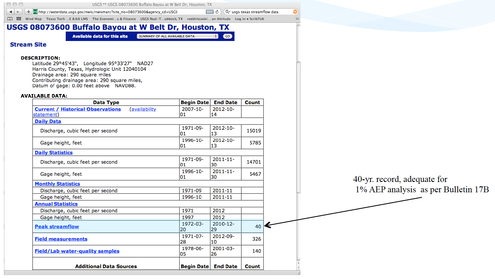
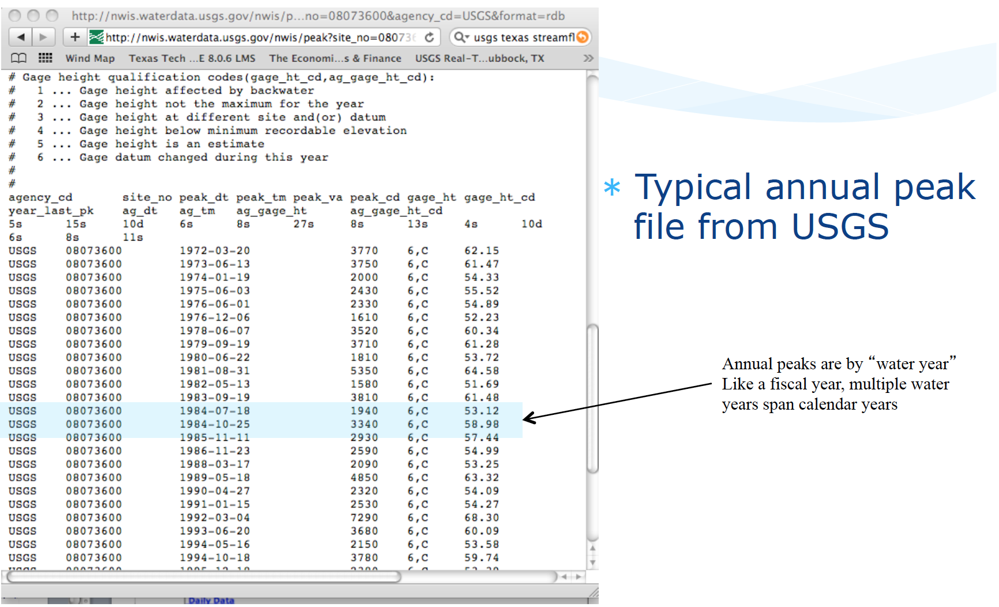
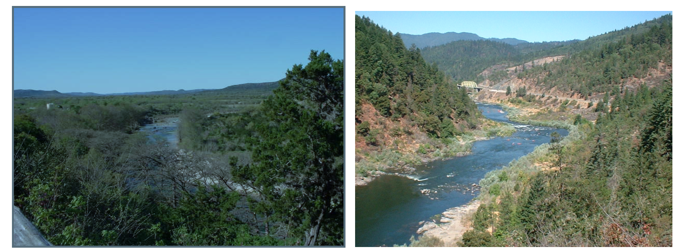

6. Streamflow Data Modeling¶
Course Website
Readings¶
Chow, V.T., Maidment, D.R., Mays, L.W., 1988, Applied Hydrology: New York, McGraw-Hill. pp. 1-12
See 7-31 TxDOT HDM for a description of slope-area (slope-conveyance) method
Generalized Skew Update and Regional Study of Distribution Shape for Texas Flood Frequency Analyses
Jamie Chan (2014) Learn Python in One Day and Learn It Well. LCF Publishing. Kindle Edition.
Grus, Joel. Data Science from Scratch: First Principles with Python. O’Reilly Media. Kindle Edition.
https://www.amazon.com/Distributional-Statistics-Environment-Statistical-Computing/dp/1463508417
https://www.astroml.org/book_figures/chapter3/fig_gamma_distribution.html
https://www.inferentialthinking.com/chapters/10/Sampling_and_Empirical_Distributions.html
https://www.inferentialthinking.com/chapters/15/Prediction.html
Videos¶
Outline¶
Streamflow Measurement
Streamflow (gage) Data
Estimation of Streamflow
Watershed Characteristics
Regional Regression Equations
TR 55
Streamflow Measurement¶
Streamflow is measured by a variety of gaging technologies.
Continuous record (usually stage, then rated to produce discharge)
Located at control section if possible
Crest-Stage (captures peak stage)
Uses slope-area to estimate discharge
Post-event site visit required to survey debris-line as independent check of estimate
Continuous gages use some kind of stilling well, and transducers to measure stage and send to satellite. During visits, a nearby staff gage is read to independently validate the transducer readings

Crest-Stage gagues usually consist of a vertical pipe with holes in bottom – becomes a stilling well. Inside a staff gage and small amount of cork “flour” records water surface elevation.
A hydrographer visits site routinely (and after major events) and records cork elevation and re-sets gage.
The elevations are marked on a staff inside the pipe with pencil (and dated)
Slope area method between several nearby pipes is used to estimate discharge

Slope Area Method¶
Application of Manning’s equation, using the slope of the water surface as the friction slope, and the stage geometry at measured cross sections.
Recall the factor 1.49 is for US Customary units, 1.0 is used if terms are expressed in SI units.
Streamflow Data¶
Data sources for streamflow include:
USGS NWIS (Website)
IBWC
Older “paper-based” records
Local gage networks
Illustrative example using USGS NWIS
Navigate to landing page for state of interest

Locate site of interest, or something stupid close

Download desired record(s)

Typical file structure

Watershed Characteristics¶
One tool in applied hydrology is to relate measurable watershed properties to streamflow discharge.
What characteristics influence runoff?
Where you are
How large an area
Gradient

More detailed list might include:
Width, shape
Elevation: minimum, maximum + slope
Roughness: Channels, overbanks
Geology and soils
Climate
Vegetation
Land use, including urbanization and imperviousness
Controls: Dams, gates, diversions, channel rectification
This is part of the motivation for learning how to delineate a watershed.
Supporting data sources include:
USGS quadrangle maps
Aerial photos
Satellite imagery
NRCS soil surveys
Field surveys
Previous investigations

Regional Regression Equations¶
Where sufficient data exist, one technique for gross estimates of streamflow based largely on watershed area, rainfall input, and location are regional regression equations. These exist in some fashion for each state in the USA, and most terrortories (Puerto Rico, Guam …). They probably exist for many other countries, and are all obtained in a similar fashion.
The equations are constructed by first fitting an appropriate probability distribution to observations at a gaged location (station flood frequency). Then the station flood frequency curves are used as surrogate observations (at a specified AEP) to relate discharge to select geomorphic variables:
The “betas” are obtained by trying to make “epsilon” small, the AREA, SLOPE, and other watershed characteristics are the explainatory variables.
The resulting equations are typically expressed in a power-law form (rather that the linear combination above) for actual application
For example in Texas the following guidance is found in Chapter 4 of the Texas Hydraulics Manual:

The actual equations in current use are
Two needed input values are the mean annual precipitation (MAP) and the Omega-EM factor both of which are mapped and available on the almighty internet
{kind=link}
Using the table above and the known equation structure it is fairly straightforward to create a tool for routine use in either a spreadsheet form or in python
Illustrative example for the Hardin Branch location (near Eden Texas).
Apply the Regression Equations for the Hardin Branch Watershed – provide a comparative estimate to help guide the project
AREA = 17 sq. mi.
MAP = 23 inches/year
OmegaEM = 0.345
Slope = 0.0048
Below is result using the spreadsheet tool
And the on-line web interface
and the on-line results
Gage Transposition Approach¶
A related (to regression methods) method that is often quite useful is a Gage Transposition Approach.
If gauge data are not available at the design location, discharge values can be estimated by transposition if a peak flow-frequency curve is available at a nearby gauged location. This method is appropriate for hydrologically similar watersheds that differ in area by less than 50 percent, with outlet locations less than 100 miles apart.
An estimate of the desired AEP peak flow at the ungauged site is provided by
\(Q_1 = Q_2(\frac{A_1}{A_2})^{0.5} \)
Where:
\(Q_1\) = Estimated AEP discharge at ungauged watershed 1
\(Q_2\) = Known AEP discharge at gauged watershed 2
\(A_1\) = Area of watershed 1
\(A_2\) = Area of watershed 2
Transposition of peak flow is demonstrated with the following example. A designer requires an estimate of the 1% AEP streamflow at an ungauged location with drainage area of 200 square miles. A nearby (within 100 miles) stream gauge has a hydrologically similar drainage area of 450 square miles. The 1% AEP peak streamflow at the gauged location is 420 cfs based on the peak flow-frequency curve developed for that location. Substituting into Equation 4-10 results in 280 cfs as an estimate of the 1% AEP peak discharge at the ungauged location:
If flow-frequency curves are available at multiple gauged sites, Equation 4-10 can be used to estimate the desired peak AEP flow from each site. Then, with judgment and knowledge of the watersheds, those estimates could be weighted to provide an estimate of the desired AEP flow at the ungauged location. This process should be well documented.
Design of a storage facility, such as a detention pond, may require estimates of AEP flows for longer durations. If a flow-frequency curve for longer flow duration is available at a nearby gauged location, then the following equation, based on an analysis of mean-daily flows , may be used for transposition:
\(Q_1 = Q_2(\frac{A_1}{A_2})^{0.9} \)
Note
This section is largely based upon Asquith, W.H., Roussel, M.C., and Vrabel, Joseph, 2006, Statewide analysis of the drainage-area ratio method for 34 streamflow percentile ranges in Texas: U.S. Geological Survey Scientific Investigations Report 2006–5286, 34 p.,1 appendix.. A key observation is that the transposition is a power-law model to relate known to unknown locations, and the power ranges from 1/2 to nearly 1.
Flood Frequency Analysis (B17C)¶
Flood hydrology is typically studied using the annual peak streamflow data collected by the U.S. Geological Survey (USGS) at streamgages. Hydraulic design engineers need standard of practice guidance for various tasks involving the analysis and application peak streamflow information. Analyses of this information materially influences bridge design, operational safety of drainage infrastructure, flood-plain management, and other decisions affecting society.
Bulletin 17B was the standard of practice for decades, recently superceded by Bulletin 17C. These and similar tools relate certain statistical metrics (mean, variance, and skew) to a prescribed probability distribution function (Log-Pearson Type III) to extrapolate (predict) the magnitude of rare (low probability) events to inform engineering design.
Tasker and Stedinger (1986) developed a weighted least squares (WLS) procedure for estimating regional skewness coefficients based on sample skewness coefficients for the logarithms of annual peak-streamflow data. Their method of regional analysis of skewness estimators accounts for the precision of the skewness estimator for each streamgage, which depends on the length of record for each streamgage and the accuracy of an ordinary least squares (OLS) regional mean skewness. These methods automated much of B17B process and were incorporated into software used for streamgage analysis.
Recent updates to B17B in terms of software improvements and different handling of gage statistics (in particular EMA) are incorporated into the current tool B17C
Summary
B17C is a report containing methods for estimating magnitudes of rare events
The methods are incorporated into software products such as PeakFQ 7.3 and HEC-SSP
Illustrative Example using Beargrass creek¶
Demonstrate using Bearcreek as an example. Beargrass creek is not a real site, therefore is not in the NWIS database, so we have to modify the file to be readable in PeakFQ.
A modified version is at BearGrass-B17B.txt
A fully provisioned Windows Implementation of B17C is located at:
server_name: kittyinthewindow.ddns.net
user_name: texas-skew
passwd: peakfq73$hare
Users must access using Remote Desktop Protocol (Built into Windows, Apple Store has a free Mac application)
In class access Brady Creek (close to Hardin Creek)
Flow Duration Curves¶
The flow-duration curve is a cumulative frequency curve that shows the percent of time specified discharges were equaled or exceeded during a given period. It combines in one curve the flow characteristics of a stream throughout the range of discharge, without regard to the sequence of occurrence. If the period upon which the curve is based represents the long-term flow of a stream, the curve may be used to predict the distribution of future flows for water- power, water-supply, and pollution studies.